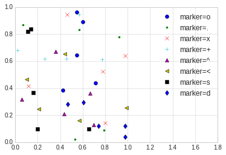
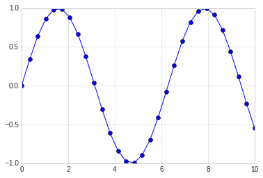

3. 散点图¶
散点图（Scatter Plot）主要是以点为主，数据是不连续的数据，通过设置线的型号为圆点来完成。 其余的线的形状为：
'.'point marker','pixel marker'o'circle marker'v'triangle_down marker'^'triangle_up marker'<'triangle_left marker'>'triangle_right marker'1'tri_down marker'2'tri_up marker'3'tri_left marker'4'tri_right marker's'square marker'p'pentagon marker'*'star marker'h'hexagon1 marker'H'hexagon2 marker'+'plus marker'x'x marker'D'diamond marker'd'thin_diamond marker'|'vline marker'_'hline marker
3.1. 简单散点图¶
#准备环境
%matplotlib inline
import matplotlib.pyplot as plt
import numpy as np
# 设置风格
plt.style.use('seaborn-whitegrid')
x = np.linspace(0,10, 30)
y = np.sin(x)
# 通过设置线型为点来完成三点图的显示
plt.plot(x, y, 'o', color='blue')
[<matplotlib.lines.Line2D at 0x7fe668f962b0>]

3.2. 其他散点图形状¶
# 散点图的形状展示
rng = np.random.RandomState(0)
for marker in ['o', '.', 'x', '+', '^', '<', 's', 'd']:
plt.plot(rng.rand(5), rng.rand(5), marker, label='marker={}'.format(marker))
plt.legend(numpoints=1)
plt.xlim(0, 1.8)

3.3. 点线结合的图¶
在plot的使用中，对线的类型使用直线(-)，圆圈(o)可以画出带有点线结合的图形。
x = np.linspace(0,10, 30)
y = np.sin(x)
# 通过设置线型为点来完成三点图的显示
plt.plot(x, y, '-o', color='blue')
[<matplotlib.lines.Line2D at 0x7fe6692aa748>]

3.4. 使用plt.scatter画散点图¶
另一个画散点图的函数是scatter，用法和plot函数类似。
但scatter更加灵活，甚至可以单独控制每个散点不同的属性，例如大小，颜色，边控等。
相对来讲，对于大量数据的渲染，plot效率要高于scatter。
# scatter案例
rng = np.random.RandomState(0)
x = rng.randn(100)
y = rng.randn(100)
colors = rng.rand(100)
sizes = 1000 * rng.rand(100)
plt.scatter(x, y, c=colors, s=sizes, alpha=0.4, cmap='viridis')
#显示颜色条
plt.colorbar()
<matplotlib.colorbar.Colorbar at 0x7fe668405438>